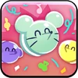

Toppings:


¿Creías que esta galleta estaba hecha con colorante alimentario artificial? ¡Adivina otra vez! Está elaborada con ingredientes 100%
naturales. Incluso sus largas y hermosas pestañas son completamente orgánicas. Las galletas se sienten atraídas por su sonrisa amistosa
y su voz gentil. De hecho, a los lindos animalitos Macaron también les encanta reunirse a su alrededor. Una vez que comienza a tocar
su tambor de macarrón, los Macaron Animals comienzan un pequeño desfile
"¡Comencemos nuestro desfile!"
Esta piedra contiene un pedazo del alma de Macaron Cookie. ¡Está pulsando con un ritmo emocionante! ¡Ba-dum-tsss!


Siguiendo la emocionante alegría de Macaron Cookie, los Macaron Animals comenzarán a marchar, causando daño a los enemigos cercanos.
Los enemigos que no sean cookies recibirán daño adicional. Su contagioso entusiasmo aumentará el ATK y CRIT% de sus aliados y restaurará
su HP. Dependiendo de la cantidad de golpes de los Macaron Animals, Macaron Cookie obtendrá una acumulación del beneficio Happy Parade.